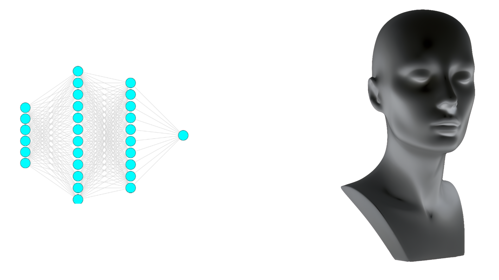

I'm an undergrad at IIT Kharagpur. I'll graduate in 2025 with
a B.Tech in ECE and M.Tech in Vision & Intelligent Systems. My overarching goal is to develop ML algorithms and systems which are democratic
& usable. My feeble attempts at doing so thus far have been supported by Boeing, IITKGPF-USA and the NSF.
C'est moi.
I am particularly interested in these closely related avenues towards "democratization and usability":
I see Neurosymbolic AI as a crucial frontier of ML research. Causal System 2 reasoning might help models become
leaner, generalize from less data and align with human values. Distilling neural agents and bootstrapping them with
solvers enables scientific discovery and safety-critical cyber-physical applications.
Distributed/Parallel/Pipelined Optimization will allow large-scale participation in ML training and enable
low-resource users to train their own state-of-the-art models. For that, it is necessary to investigate such
methods that maximize privacy and tolerate faults.
A common thread in my research is is brain-inspired computation. Now, I'm not one
to restrict our discrete, verifiable computer programs to follow natural, error-prone stochastic patterns. But
we exhibit some engineering desiderata such as efficient higher-order generalization and massively parallel,
asynchronous computation. Our brains can provide some select properties and design heuristics.
I spent my summers with Prof. David Inouye at
Purdue working on greedy & distributed optimization and at
AirLab, CMU working on ILP, LLMs and map-matching. At KGP, I lead the AGV undergrad group's DL team on
scene understanding, IRL and FL.
In my free time, I code goofy mini-projects, most of which never make it to my GitHub out of embarassment. I enjoy
playing and watching sports (especially basketball). I also spread vitriol online through my blog. I've represented
IITKGP twice in word games at the collegiate level. Recently, I've taken a liking to competitive programming and CTFs.
I did say I liked computers.
I grew up in the wonderful Hauz Khas, New Delhi, India. During breaks, you'll find me there hanging out with
old friends, my parents and the dog. I was born in Baltimore and spent some early years in Santa Clara. I guess
that makes me an expat/international student from India's perspective.
Abstract: Vertical Federated Learning (VFL) is an emergent distributed machine learning paradigm wherein owners of disjoint
features of a common set of entities collaborate to learn a global model without sharing data. In VFL, a host client
owns data labels for each entity and learns a final representation based on intermediate local representations from
all guest clients. Therefore, the host is a single point of failure and label feedback can be used by malicious
guest clients to infer private features. Requiring all participants to remain active and trustworthy throughout the
entire training process is generally impractical and altogether infeasible outside of controlled environments. We
propose Decoupled VFL (DVFL), a blockwise learning approach to VFL. By training each model on its own objective,
DVFL allows for decentralized aggregation and isolation between feature learning and label supervision. With these
properties, DVFL is fault-tolerant and secure. We implement DVFL to train split neural networks and show that model
performance is comparable to VFL on a variety of classification datasets.
This work is currently under peer review. Preprint below (to be revised soon). I also presented an early sketch of
the idea at the SURF Symposium at Purdue University.
This was my Bachelor's thesis. I completed a two-semester track thesis in one. I picked this problem, formulated the
solution, designed & programmed the experiments and wrote the paper. Since the thesis submission, I've been trying to
add more datasets and models and get it accepted at a conference. Thanks to Yash
for helping out with some of the legwork since I didn't have as much time during the next semester to do it all alone.
Thanks also to Profs. Inouye and Jithin R for their valuable guidance.
Abstract: Vertical Federated Learning (VFL) is a machine learning paradigm for learning from vertically partitioned data
(i.e. features for each input are distributed across multiple "guest" clients and an aggregating "host" server owns
labels) without communicating raw data. Traditionally, VFL involves an "entity resolution" phase where the host
identifies and serializes the unique entities known to all guests. This is followed by private set intersection
to find common entities, and an "entity alignment" step to ensure all guests are always processing the same entity's
data. However, using only data of entities from the intersection means guests discard potentially useful data.
Besides, the effect on privacy is dubious and these operations are computationally expensive. We propose a novel
approach that eliminates the need for set intersection and entity alignment in categorical tasks. Our Entity
Augmentation technique generates meaningful labels for activations sent to the host, regardless of their
originating entity, enabling efficient VFL without explicit entity alignment. With limited overlap between training
data, this approach performs substantially better (e.g. with 5% overlap, 48.1% vs 69.48% test accuracy on CIFAR-10).
In fact, thanks to the regularizing effect, our model performs marginally better even with 100% overlap.
Abstract: Distributed machine learning has grown in popularity due to data privacy, edge computing, and large model training.
A subset of this class, Vertical Federated learning (VFL), aims to provide privacy guarantees in the scenario where
each party shares the same sample space but only holds a subset of features. While VFL tackles key privacy
challenges, it often assumes perfect hardware or communication (and may perform poorly under other conditions).
This assumption hinders the broad deployment of VFL, particularly on edge devices, which may need to conserve power
and may connect or disconnect at any time. To address this gap, we define the paradigm of Internet Learning (IL),
which defines a context, of which VFL is a subset, and puts good performance under extreme dynamic condition of data
entities as the primary goal. As IL represents a fundamentally different paradigm, it will likely require novel
learning algorithms beyond end-to-end backpropagation, which requires careful synchronization across devices. In
light of this, we provide some potential approaches for the IL context and present preliminary analysis and
experimental results on a toy problem.
This was the first bit of my work as a Summer Undergraduate Research Fellow at Purdue University. I helped Prof.
Inouye design and program the experiments, and wrote the appendix and relevant sections of the paper. I also wrote
an intermediate revision of the submission from scratch. This work was accepted to an ICML 2023 workshop.
Papers > Reproducibility and Transfer Learning
of the YNet Paper
Won Machine Learning Reproducibility Challenge 2022. Accepted to ReScience C and invited to NeurIPS 2022 special
reproducibility track poster session. Successfully reproduced the results and showed significant transfer learning
abilities.
Abstract: Human trajectory forecasting is an inherenty multimodal problem. Uncertainty in future trajectories stems from two
sources: (a) sources that are known to the agent but unknown to the model, such as long term goals and (b) sources
that are unknown to both the agent & the model, such as intent of other agents & irreducible randomness in decisions.
This stochasticity is modelled in two major ways: the epistemic uncertainity which accounts for the multimodal nature
of the long term goals and the aleatoric uncertainity which accounts for the multimodal nature of the waypoints.
Furthermore, the paper extends the existing prediction horizon to up to a minute. The aforementioned features are
encompassed into Y-Net, a scene compliant trajectory forecasting network. The network has been implemented on the
following datasets : (a) Stanford Drone (SDD) (b) ETH/UCY (c) Intersection Drone. The network significantly improves
upon state-of-the-art performance for both short and long prediction horizon settings.
In this section you'll find projects that I'm hacking away at right now.
What to expect here: My personal projects are pretty heavily influenced by my research interests. Usually
there'll be deployments or integrations of topics I'm researching with other stuff I find interesting. There is
also a slightly heavier systems bent here because I love toying with systems and I am a bit of a security/privacy
nut.
Please scroll down or use the links below to navigate/skip.
Ongoing Projects > Bridging the
Neurosymbolic Gap using Information Theory

This project is still ongoing. I will update this section once we submit our paper.
My work is to advance a project that aims to forecast and analyze aircraft activity at airports. My goal is: given
a long and complex natural-language rulebook and a view of the airport, to reliably determine if any rule is about
to be broken.
Existing work on this project includes a large-scale dataset and a software repository which processes the data,
predicts trajectories, performs visualizations and simulations etc. Besides my work on rule-checking, I am also
adding a few features to the software repository: semantic grounding for data and semantic-aware trajectory refinement.
Performing fixed tasks in the open-world sandbox game Minecraft is a popular benchmark for RL agents. As someone who
used to enjoy a spot of Minecraft as a kid, I had the fantastic idea of training an agent to do a slightly more difficult
but fun task: PvP combat.
This is a slightly more challenging task than, say, the MineRL benchmark. Firstly, our goal is to learn purely from
visual + input data, viz. without using the internal game state. Second of all, Minecraft PvP dynamics are a little
weird, and the agent needs to learn a very specific technique from an open-ended and continuous search space.
I had originally started this project when I was home during the pandemic, and had to give it up because I
couldn't bring my PC to campus when offline class restarted. Now, I am armed with more money (so I can go back home
occasionally to hack away at this project) and insight (I want to try imparting symbolic primitives as an expert
Minecraft PvPer and allow the model to learn its parameters in order to help the policy zone in on the "intricate"
PvP mechanics).
Ongoing Projects >
Trajectory Prediction using Inverse Reinforcement Learning
Trajectory Prediction has become a benchmark task with the ostensible goal of deployment in autonomous vehicles. But
are models that get the best ADE/FDE really the best for downstream tasks such as path planning?
We wish to investigate two prongs: given an environment that evolves based on some probabilistic logic, can an inverse
RL agent extract the logic? If not exactly, how far are real trajectories from those rolled-out by the discovered logic?
Further, can we use the logic (or better yet, the whole reward map) to learn a better planner than the SotA forecasting methods?
And, can we predict paths using the learned reward map that are performant on typical trajectory forecasting benchmarks?
I have done far too many silly little projects to list. In this section [WIP], I'm going to enumerate some of the
more interesting ones that didn't appear above. These include unsubmitted research projects, personal projects and a
smattering of course projects.
What to expect here: I've been programming in C/C++ since the 8th grade and Python since my first year of undergrad. I also have a
penchant for niche technologies. Sometimes I go out of my way to find cool stuff to implement in unpopular
frameworks and languages. But since most of my significant work is related to machine learning, my GitHub is sadly
whitewashed in Python.
I guess I also kinda familiar with Prolog now. I also know some bash,
asm (8051, x86, hopefully some RISC stuff soon) and ostensibly even Verilog. When I get time I want to get better at
OCaml, Rust and Scala.
I'm comfortable with C++'s standard libraries and actively studying some implementations of low-level libraries in C.
I also intend to study CUDA programming in the near future. I'm well-versed in the typical ML/data pipeline for Python
with PyTorch (including Geometric and Lightning), scikit, Pandas and what have you. I also use some security tools
for CTFs like radare2, pwntools and so on.
I'd also like to think I'm a good technical writer. I've got a few peer reviewed works under my belt.
More Projects > Research, Competitions,
OSS, Personal
Research & Competitions (excluding published projects, see Papers):
[Fall '24] Inter-IIT Tech:
Won gold at the Inter-IIT Tech Meet in 2024. Helped develop an optimized foundation model-based approach to
open-world SLAM. Helped implement an explanation classifier for AI-generated images.
[AGV Fall '24] Game Theoretic Planner for an F1/tenth Scale Robot:
Systems-level optimization (mainly focused on getting a good non-convex solver to work real-time our old
NVIDIA Jetson) for a game-theoretic planner. Plan to enter the F1/tenth competition at ICRA 2025.
[CMU Summer '24] Amelia: Intent Prediction for Airport Surface Operations: Designed some fast map
matching algorithms, developed a LLM-based procedural bias heuristic for Inductive Logic Programming based on an English
description.
[IITKGP March '24] Goodness of Fit in Distributed Binary Detection:
Conducted a literature search of recent results on sample complexity in communication-constrained binary
detection. Derived some elementary corollaries for GoF when there are 2 inferrers.
[IITD Winter '23] Domain Adaptation for Breast Cancer Detection in Indian mammograms:
Wrote some internal scripts and analyzed their outputs to help diagnose the poor transfer performance of
SotA object detection algorithms when transferring to Indian mammogram data.
Helped implement focal modulation and designed an appropriate masking strategy.
[AGV Fall '22] Machine Learning Reproducibility Challenge 2023:
Lead two teams of juniors on MLRC 2023, reproduced results from the papers of CLRNet and the other thing.
Conducted lit review. Helped design ablation study, edited report for CLRNet. Designed experiments on
computational efficiency for the other one.
[AGV Summer '22] ECCV 2022 Visual Inductive Priors for Data-Efficient Deep Learning Challenge:
Tried to piecemeal tweak some baselines to achieve data efficient object detection. The best model that could
fit on our limited compute got us 10th place out of 63 teams.
Personal & Open-Source (recent only):
Automation services and scripts for secure RDP access to a shared desktop computer
A VLM finetuned on Minecraft Texture Packs
A trajectory generator for experiments in neurosymbolic learning
Continued in the next section. Please scroll.
More Projects > OSS, Personal, Coursework
Personal & Open-Source (select only):
A case study on IP grabbers
A survey of game theoretic approaches to differential privacy (sadly someone had already done the
idea I had, but... fun read)
This website :)
Course Projects:
[CS60081 Fall '24] Usable Security and Privacy: TBD
[EC61205 Fall '24] Communication Networks: TBD
[CS60112 Spring '24] Information and System Security: CTF Challenge:
Participated in a large number of CTFs ranging from simple PHP query injection attacks to convoluted use-after-free
heap tricks.
[EC60012 Spring '24] Advanced Operating System Design: Elements of a Distributed System:
Used system calls to re-implement inter process communication, a rudimentary file system and read/write/copy
functions, user-level process migration (using CRIU) and Maekawa's Algorithm.
[EC61xxx Spring '24] Deep Learning: SVD-LoRA:
Implemented LoRA for finetuning. Proposed a new initialization strategy using SVD.
[CS60077 Fall '23] Reinforcement Learning: Dynamic Gridworld:
Implemented a few online RL algorithms and deep RL algorithms for navigating a gridworld in a
particular manner (the right manner remaining unspecified to the agent-- only rewarded). Showed that it
does not work thanks to the sparsity of valid transitions, and that it does when learning from an expert.
Continued in the next section. Please scroll.
More Projects > Coursework
Course Projects:
[EC60007 Fall '23] Computational Neuroscience: Neural Signal Processing in MATLAB:
Conducted a wide variety of modelling and simulation experiments on real data, from the Hodgkin-Huxley and
Morris-Lecar equations to extracting maximally informative dimensions.
[CS60050 Spring '23] Machine Learning: Various benchmark tasks:
Rice Variety Classificaiton using Naive Bayes Classifier
Heart Disease Detection using Support Vector Machines
K-means clustering vs. Single-Linkage Top-Down Agglomerative Clustering
[EC60004 Spring '23] Neuronal Coding of Sensory Information: Processing Cat Auditory System Signals in MATLAB:
Analyzing discrimination in cat auditory nerve fiber responses to tones and speech
[EC39002 Spring '23] Embedded Systems Lab: Temperature Controller on an 8051:
Wrote a temperature controller in Assembly for an 8051 which turns a fan on whenever a thermometer reading
crosses a certain threshold and off vice versa.
[CS60092 Spring '22] Information Retrieval: I forgot:
I honestly can't for the life of me remember what I did and I didn't upload it to GitHub.
[CS61603 Fall '21] Computational Foundations of Cyber-Physical Systems: Differential Privacy in a Smart Grid:
Implemented a smart grid in MATLAB-Simulink, ran simulations, added Gaussian noise-based differential privacy
and re-ran those experiments. (In retrospect, I don't remember why it was Gaussian. Laplace might have made
more sense).
[DY17003 Fall '20] DIY Project: Gesture-Controlled Medical Robot:
Used pretrained models from MediaPipe and developed a sign language to control a robot. Sent control signals
over WiFi to an Raspberry Pi robot.
Continued in the next section. Please scroll.
Fun: Misc stuff
My reading list. Everything from texts, monographs, proceedings, papers, fiction, nonfiction...
Online Presence
My e-mail is avi.amalanshu@kgpian.iitkgp.iitkgp.ac.co.in..com
I anticipate your hate mail.
My email and LinkedIn are probably the easiest way to
get a hold of me.
Check out my blog: malansh on Medium. I plan to start writing on it again
when I'm a little more free, say Winter 2024. Topics I have in mind cover a mix of general advice, opinion pieces,
and academic nerdery. (Information Geometry, anyone?)
I'm always on the lookout for interesting puzzles and research problems, especially stuff that's interdisciplinary
or niche (underappreciated). Let's talk if you have something interesting and can use my contributions.
I love handing out advice and mentoring (to the extent that I often do so unsolicited). So feel free to
solicit if you're interested! Be it JEE prep, handling acads + research at IIT, and of course, breaking into fields
I'm working in.
I'm graduating in 2025 and I'm looking for opportunities. Please reach out.